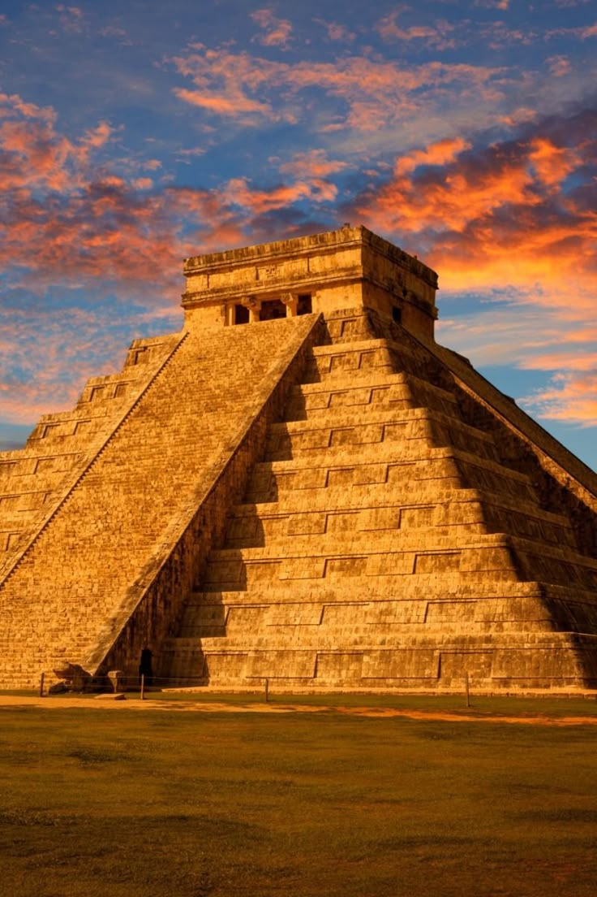
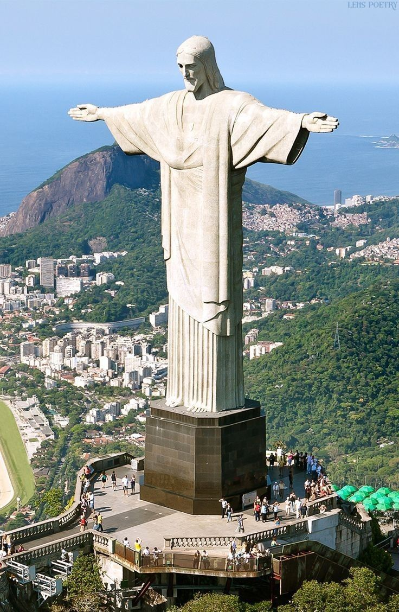
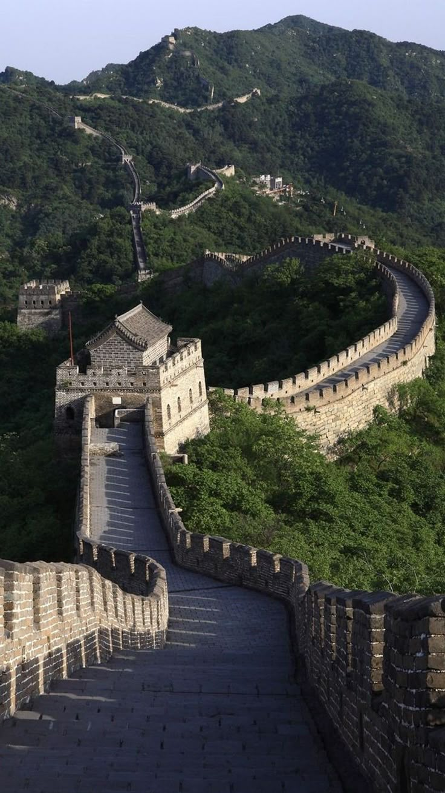

An icon of Islamic architecture and India, this white marble mausoleum is full of symbolism, history, and culture

Chichen Itza
Chichen Itza is beautiful and magnificent just as you must have already heard and it has plenty of Mayan Ruins to visit and get to know about its history.

Christ the Redeemer
an iconic Art Deco statue of Jesus Christ located in Rio de Janeiro, Brazil, specifically atop Corcovado Mountain.

The Great Wall of China
a series of fortifications built across the historical northern borders of ancient Chinese states and Imperial China as a defense against nomadic groups.
Machu Picchu
Machu Picchu, site of ancient Inca ruins located about 50 miles (80 km) northwest of Cuzco, Peru, in the Cordillera de Vilcabamba of the Andes Mountains.